24.1万回
Instagramの閲覧数（30日間）
2026年10月5日時点のインサイト。1週間前（9月29日）は約9.8万回 → 2倍以上に。
11.9万人
閲覧した人の数
同じ30日間・2026年10月5日時点
93.8%
フォロワー以外への到達
閲覧のうち、まだフォローしていない人の割合。新しい人に届いています。
8分36秒
ゲームを開いた人の平均プレイ時間
エギングゲーム・2026年9月（GA4）
53人
公式LINEの友だち（開設1日半）
2026年10月1日時点。宣伝の一斉配信なし
9.9万回
いちばん見られた1本の閲覧数
プロフィールへのアクセス 2,838回／外部リンクのタップ 394回（同30日間）
-
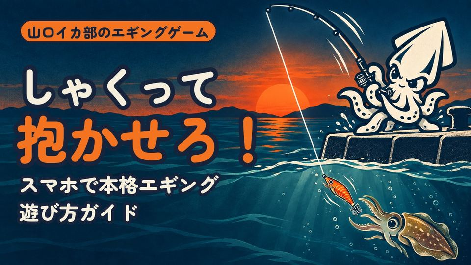
エギングゲーム「しゃくって抱かせろ！」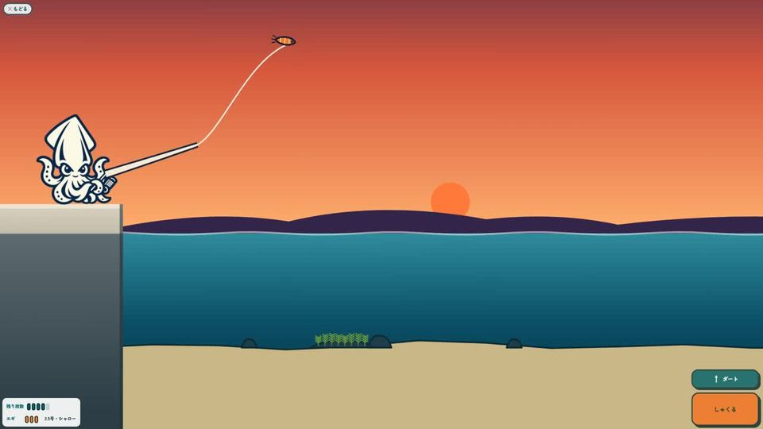
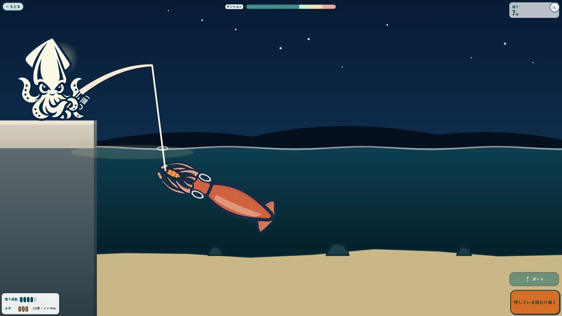
ボタン1つで、投げて・沈めて・しゃくって・抱かせる本格エギング。萩の今日の風・波・潮で釣れ具合が変わります。
-
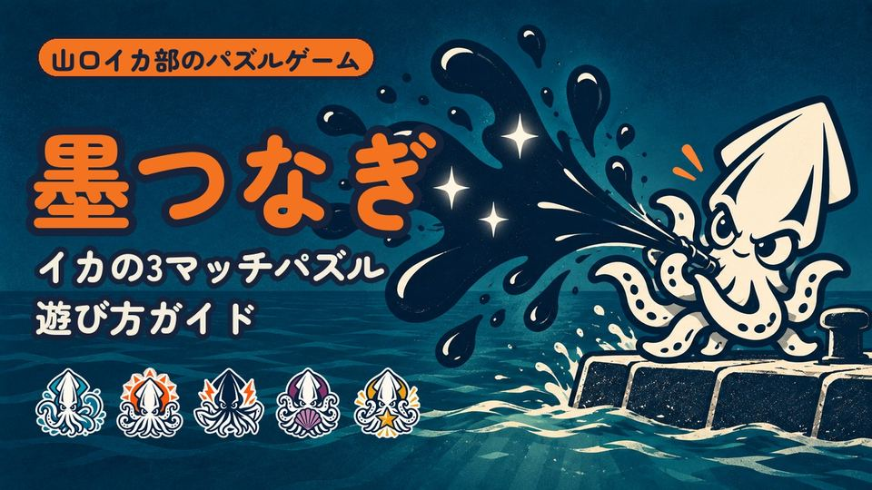
パズル「墨つなぎ」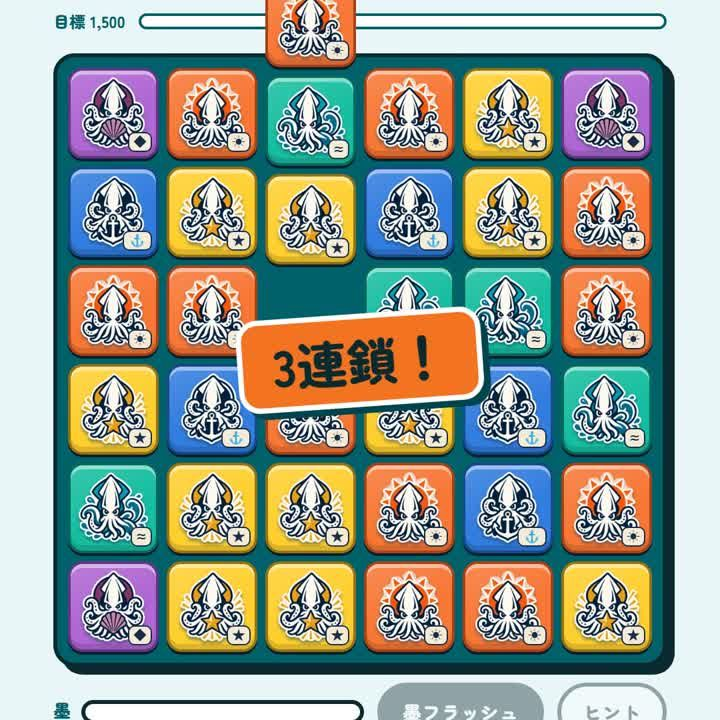
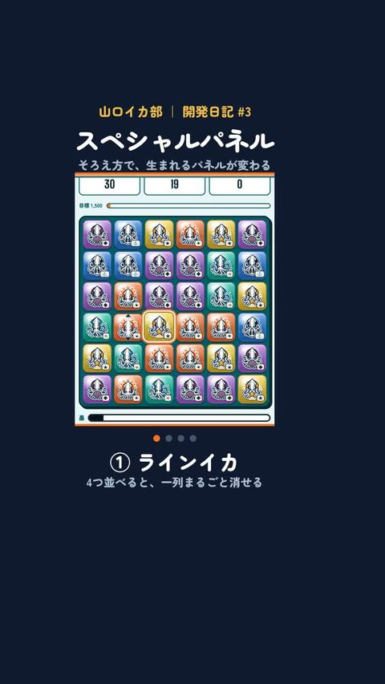
6×6のイカの3マッチパズル。20手で何点取れるか。今日の一戦は世界中で同じ盤面です。
-
カードガチャ完全無料
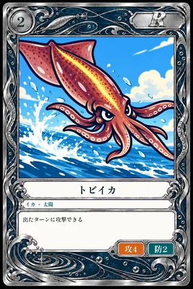
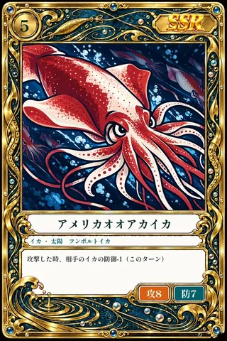
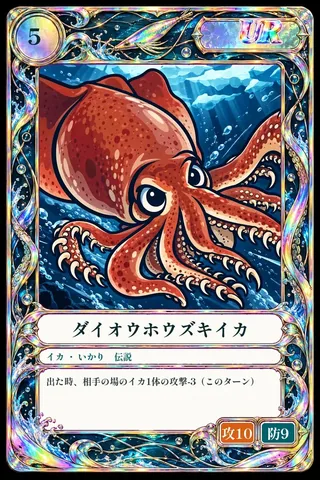
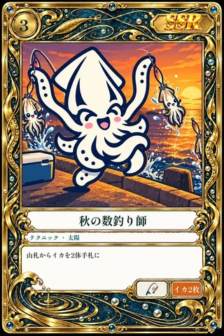
遊ぶとチケットがたまり、270枚のカードが引けます。課金はありません。レア度のロゴ・釣りネタの名前も自作。
-
LINEの動くスタンプ
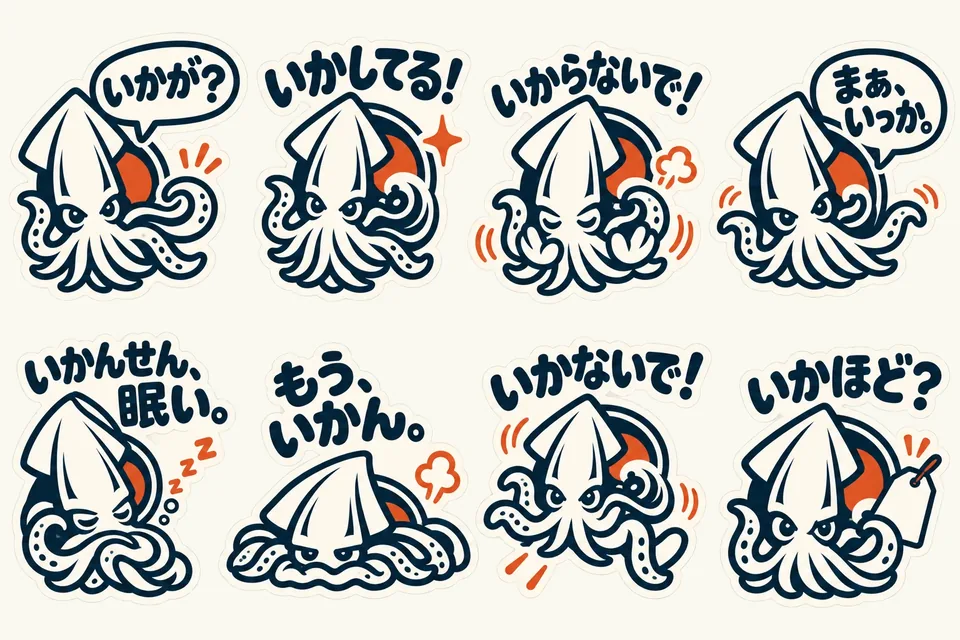
部のキャラクターで動くスタンプを2セット制作。LINE Creators Marketの審査を通り、2026年10月10日発売。
-
公式LINE
部員の入口。ゲームのチケット配布・お知らせ・ガチャの受け取りをLINEの中で。開設1日半で53人（2026年10月1日・一斉配信なし）。
-
Instagramのリール運用
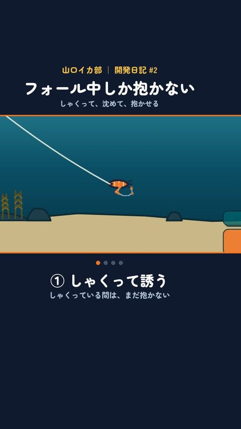
ゲーム画面で「水中でイカがいつ抱くか」を解説するリールを制作・運用。1本で7.2万回、7.1万回の閲覧（下の棒グラフ）。
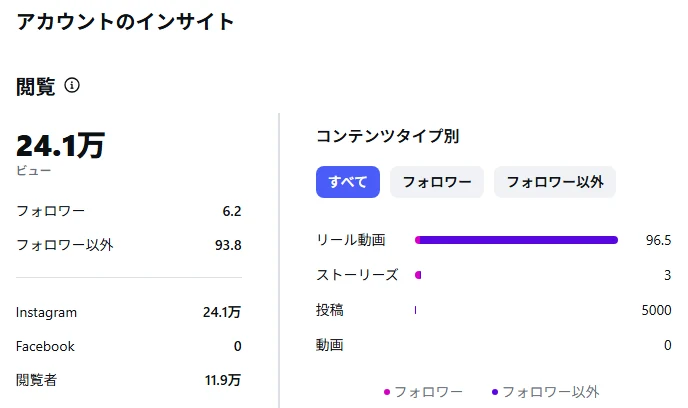
2026年10月5日のInstagramインサイト画面（30日間）。上の数字はここから。
山口イカ部 ／ ゲーム＋SNS＋LINE
釣りゲームを作って、
Instagramで月24万回見られる部活に。
企画・運営：共同プロジェクト／制作：Tproject（ゲーム開発・サイト構築・公式LINE・Instagram運用）。「イカ釣りを、遊びながら覚える」をテーマに、ブラウザで遊べるエギングゲームと、その画面を使ったInstagramの発信を同時に進めています。
- やったこと
- ブラウザ釣りゲーム2本の開発／部のサイト／公式LINE（チケット配布・ガチャ）／Instagramのリール制作と運用
- 伸びた理由
- 「実際の釣りでは見えないところ」を、ゲームの断面図で見せる。告知や写真＋文字の便利情報は伸びず、解説リールだけが伸びました。
数字はすべて2026年10月5日時点のInstagramインサイト（30日間）。共同相手の名前は、取り決めにより掲載していません。